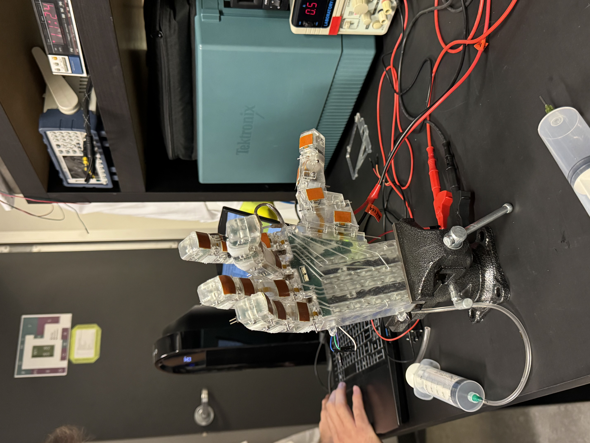
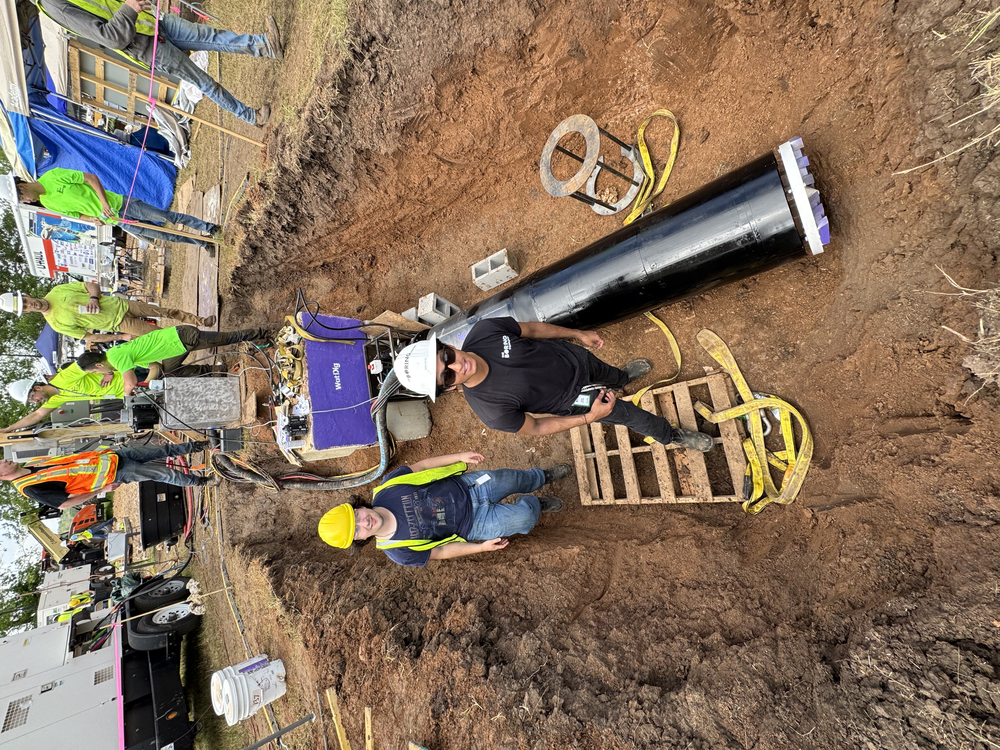
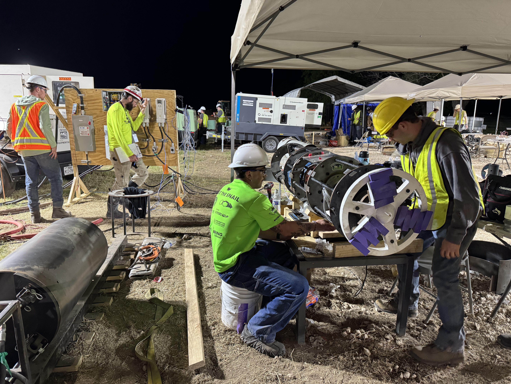
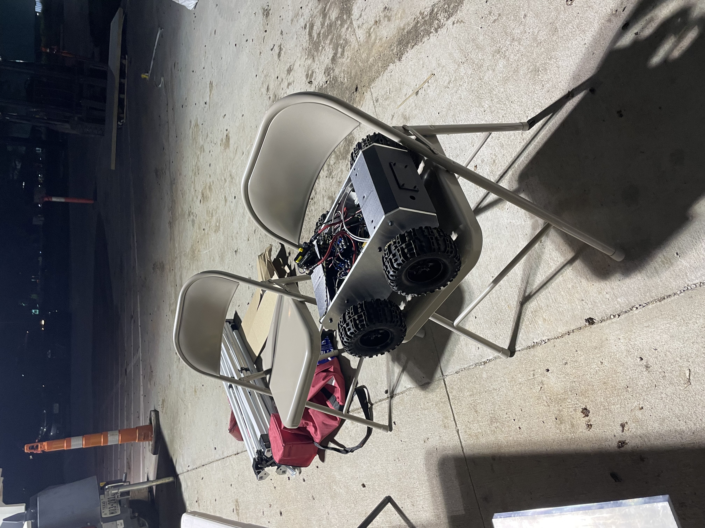
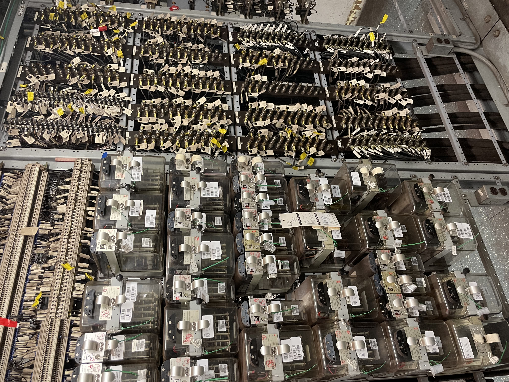

Mechatronics Engineering Student at the University of Waterloo. Passionate about robotics, manufacturing systems, and solving complex engineering challenges.
About
Engineer with strong focus on mechanical design, robotics, and how they impact real-world issues. I'm driven by challenging projects that combine innovative design with practical engineering solutions, from soft robotics research to tunnel boring machines.
Experience
Soft Robotics R&D Engineering Intern
University of Waterloo | Sept 2025 - Dec 2025
Responsible for the ideation, design, and construction of a pneumatically actuated, soft robotic hand along with a repeatable manufacturing procedure, the purpose of which is to create a product for lymphedema patients.
The hand contains 16 actuators, 19 PCB Boards, and 32 solenoid valves in order to meet the standard of mobility. Air pressure, surface pressure, and angle sensors are at each joint to allow for a fully closed control system. All listed hardware fits within the mechanical design of the palm.
Utilized SolidWorks, AutoCAD, Altium, laser cutting, both SLS and FDM 3D Printing as well as various developed manufacturing techniques to design a feasibly 3D printable mechanical structure, as well as manufacturing rigs for Laser Cut thermal polyurethane bellow-shaped pneumatic actuators.
Collaborated alongside Masters and PhD students with various other soft-robotics related tasks pertaining to their research papers. Said tasks include testing rigs for soft strain gauges and soft surface pressure sensors, as well several electrical board housings.
Co-Founder and Erosion Team Lead
WatDig | Sept 2023 - May 2025
Constructed a small-scale tunnel boring machine for the 2025 Not-A-Boring Competition.
Led the mechanical design and R&D efforts to create an Excavation Subsystem composed of a powertrain capable of producing 2100 Nm of torque and a closed loop slurry soil treatment system.
Designed and implemented the excavation chamber onboard the TBM which is responsible for the mixture and removal of slurry during excavation and is critical for maintaining earth pressure balance during excavation.
Led integration efforts between the erosion team and other subsystems, coordinating for timely manufacturing.
Manufacturing Engineering Intern
Global Furniture Group | Jan 2025 - April 2025
Designed manufacturing fixtures and jigs in SolidWorks using UBG plastic and sheet metal so that technicians responsible for all stitching done on the assembly line can operate their equipment efficiently.
Developed a rotating fixture assembly to allow for upholsterers to assemble and staple products that interface with injection molded parts by utilizing aluminum extrusions, pneumatic cylinders, and UBG Plastic.
Conducted a time study on an assembly line using lean manufacturing principles to suggest optimizations.
Automatic Train Control Engineering Assistant
Toronto Transit Commission | May 2024 - Aug 2024
Utilized Microstation to produce, alter, and organize crucial mechanical and electrical drawings for the update of the entire relay-based signalling system of the Toronto subway lines.
Led the implementation of the mechanical and electrical design of new signalling infrastructure for Line 1 of the TTC by repurposing old hardware. Conducted on-site field inspections of hardware design changes.
Junior Systems Integration Coordinator
WGD Consulting | Sept 2023 - Dec 2023
Utilized Python Scripting to automate calculations involving Traction Power data pulled from the existing SCADA system for a 30,000 KWh light rail project.
Conducted RAMS Engineering analysis to analyze tunnel ventilation systems coordinating engineering efforts with various contractors. Constructed a Visio Flowchart with logic gates to ensure understanding of all Electromagnetic Compliance standards.
Project Managment Intern
Alstom | Jan 2023 - May 2023
Supported technical problem solving related to the vehicles using mechanical and electrical engineering concepts.
Proposed equipment modification regarding train axle mounting based on existing Failure Mode Analysis.
Identified and analyzed potential problems, prepared Project Timelines and Engineering Documentation ensuring projects were completed in a timely manner.
Collaborated with a cross-functional maintenance team to achieve all desired metrics.
Visuals
Soft robotic hand internal view. Here you can see all the solenoid valves as well as the solenoid driver board and the palm PCB board.

Soft robotic hand with tactile sensors. Here you can see an unfinished arrangement of the tactile sensors on the fingertips and palm.

Top view of tunnel boring machine. This image shows the TBM in a ready to dig position on its rails with our thrust plate and control board set up and ready to begin.

Side and unhoused view of tunnel boring machine. This image shows the side profile and some internal features of the TBM.

NaBC Mini competition Rover. Autonomous rover designed for the NaBC Mini-Competition the year prior to the full competition.

TTC mechanical relay signalling system. Picture of the one section of mechanical relay signalling that I made electrical and mechanical design changes for while at the TTC.
Education
Bachelor of Applied Science, Mechatronics Engineering
University of Waterloo | Sept 2022 - April 2027 | GPA: 3.9
Relevant Courses: Design & Dynamics of Machines, Thermodynamics & Heat Transfer, Power Electronics, System Models, Mechanics of Deformable Solids, Fluid Dynamics, Electromechanical Machine Design